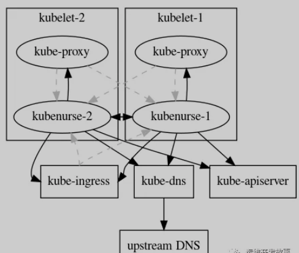
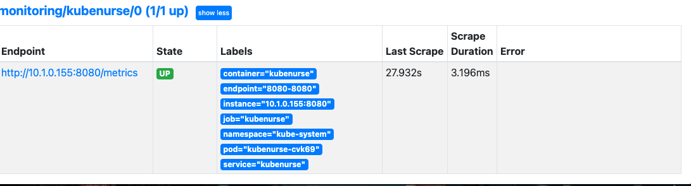
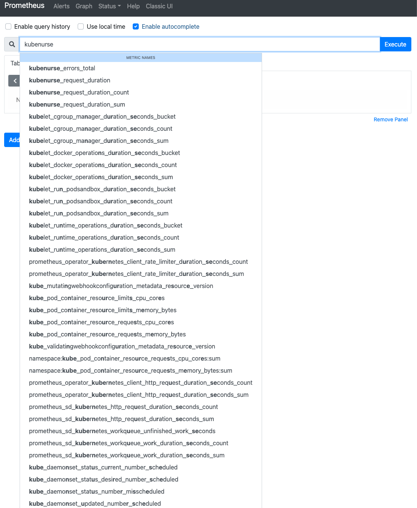
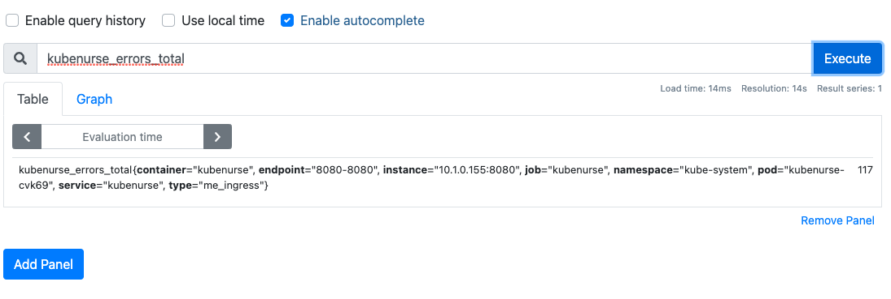
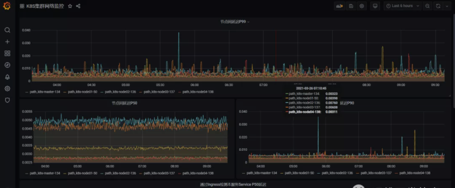

第八节 Operator2021-使用KubeNurse进行集群网络监控
- https://github.com/postfinance/kubenurse
- https://github.com/postfinance/kubenurse/tree/master/examples
1 前言
在Kubernetes中，网络是通过第三方网络插件来提供，这些三方插件本身的实现就比较复杂，以至于在排查网络问题时常常碰壁。那么有没有什么方式来监控集群中所有的网络连接呢？
kubenurse就是这样一个项目，它通过监视集群中的所有网络连接，并提供监控指标供Prometheus采集。
2 Kubenurse
kubenurse的部署非常简单，使用Daemonset形式部署到集群节点上，Yaml文件在项目的example目录下。
部署成功后，每5秒钟会对/alive发一次检查请求，然后其内部会运行各种方法全方位对集群网络进行检测，为了防止过多的网络流量，会对检查结果缓存3秒。其检测机制如下：

从上图可以看出，kubenurse会对ingress、dns、apiserver、kube-proxy进行网络探测。
所有的检查都会创建公开的指标，这些指标可用于检测：
- SDN网络延迟以及错误
- Kubelet之间的网络延迟以及错误
- Pod与apiserver通信问题
- Ingress往返网络延迟以及错误
- Service往返网络延迟以及错误（kube-proxy）
- Kube-apiserver问题
- Kube-dns（CoreDns）错误
- 外部DNS解析错误（ingress url解析）
然后这些数据主要通过两个监控指标来体现：
kubenurse_errors_total：按错误类型划分的错误计数器kubenurse_request_duration：按类型划分的请求时间分布
这些指标都是通过Type类型进行标识，对应几种不同的检测目标：
api_server_direct：从节点直接检测 API Serverapi_server_dns：从节点通过 DNS 检测 API Serverme_ingress：通过 Ingress 检测本服务 Serviceme_service：使用 Service 检测本服务 Servicepath_$KUBELET_HOSTNAME：节点之间的互相检测
然后这些指标分别按P50，P90，P99分位数进行划分，就可以根据不同的情况来确认集群网络状况了。
2 Promethuse-operator 2021 安装
helm repo add prometheus-community https://prometheus-community.github.io/helm-charts
helm repo update
$ helm repo list
NAME URL
loki https://grafana.github.io/loki/charts
argocd-helm https://chao-xi.github.io/helm/
istio https://storage.googleapis.com/istio-release/releases/1.3.6/charts
incubator http://mirror.azure.cn/kubernetes/charts-incubator/
argo https://argoproj.github.io/argo-helm
traefik https://containous.github.io/traefik-helm-chart
oteemocharts https://oteemo.github.io/charts
hashicorp https://helm.releases.hashicorp.com
prometheus-community https://prometheus-community.github.io/helm-charts
helm-values
│ └── prometheus-operator-values.yml
prometheus-operator-values.yml
# We don't need the alertmanager for this demo
alertmanager:
enabled: false
# This configuration means all ServiceMonitors in the namespsace will be picked up
# Use with caution!
prometheus:
prometheusSpec:
serviceMonitorSelectorNilUsesHelmValues: false
serviceMonitorSelector: {}
grafana:
persistence:
enabled: true
type: pvc
size: 5G
storageClassName: "hostpath"
prometheusOperator:
admissionWebhooks:
enabled: false
prometheus-node-exporter:
hostRootFsMount: false
# prometheus-node-exporter:
# hostRootFsMount: false
Installed Error
Error: failed to start container "node-exporter": Error response from daemon: path / is mounted on / but it is not a shared or slave mount
https://github.com/prometheus-community/helm-charts/issues/467
prometheus-node-exporter:
hostRootFsMount: false
Or
kubectl patch ds kube-prom-prometheus-node-exporter --type "json" -p '[{"op": "remove", "path" : "/spec/template/spec/containers/0/volumeMounts/2/mountPropagation"}]' -n monitoring
Installation
helm install kube-prom prometheus-community/kube-prometheus-stack -f helm-values/prometheus-operator-values.yml --namespace monitoring
Upgrade
helm upgrade kube-prom prometheus-community/kube-prometheus-stack -f helm-values/prometheus-operator-values.yml --namespace monitoring
$ kubectl get pod -n monitoring NAME READY STATUS RESTARTS AGE
kube-prom-grafana-854d497c4b-gcd2j 2/2 Running 10 4h39m
kube-prom-grafana-test 0/1 Error 0 4h39m
kube-prom-kube-prometheus-operator-6b84867b8b-wpfpp 1/1 Running 6 4h39m
kube-prom-kube-state-metrics-77866d67c5-kl44g 1/1 Running 2 4h39m
kube-prom-prometheus-node-exporter-qkplq 1/1 Running 0 40s
prometheus-kube-prom-kube-prometheus-prometheus-0 2/2 Running 11 4h38m
3 KubeNurse 安装部署
这里直接使用官方的部署文件进行部署。不过需要更改几个地方。（1）首先将代码clone到本地
git clone https://github.com/postfinance/kubenurse.git
进入example目录，修改ingress.yaml配置，主要是添加域名，如下。
---
apiVersion: extensions/v1beta1
kind: Ingress
metadata:
annotations:
kubernetes.io/ingress.class: nginx
name: kubenurse
namespace: kube-system
spec:
rules:
- host: kubenurse-test.xxx.cn
http:
paths:
- backend:
serviceName: kubenurse
servicePort: 8080
更新daemonset.yaml配置，主要是更改ingress的入口域名，如下。
---
apiVersion: apps/v1
kind: DaemonSet
metadata:
labels:
app: kubenurse
name: kubenurse
namespace: kube-system
spec:
selector:
matchLabels:
app: kubenurse
template:
metadata:
labels:
app: kubenurse
annotations:
prometheus.io/path: "/metrics"
prometheus.io/port: "8080"
prometheus.io/scheme: "http"
prometheus.io/scrape: "true"
spec:
serviceAccountName: nurse
containers:
- name: kubenurse
env:
# - name: KUBENURSE_INGRESS_URL
# value: https://kubenurse.example.com
- name: KUBENURSE_SERVICE_URL
value: http://kubenurse.kube-system.svc.cluster.local:8080
- name: KUBENURSE_NAMESPACE
value: kube-system
- name: KUBENURSE_NEIGHBOUR_FILTER
value: "app=kubenurse"
image: "postfinance/kubenurse:v1.2.0"
ports:
- containerPort: 8080
protocol: TCP
tolerations:
- effect: NoSchedule
key: node-role.kubernetes.io/master
operator: Equal
- effect: NoSchedule
key: node-role.kubernetes.io/control-plane
operator: Equal
rbac.yaml
---
apiVersion: rbac.authorization.k8s.io/v1
kind: RoleBinding
metadata:
name: nurse
namespace: kube-system
roleRef:
apiGroup: rbac.authorization.k8s.io
kind: ClusterRole
name: view
subjects:
- kind: ServiceAccount
name: nurse
namespace: kube-system
service.yaml
---
apiVersion: v1
kind: Service
metadata:
labels:
app: kubenurse
name: kubenurse
namespace: kube-system
spec:
ports:
- name: 8080-8080
port: 8080
protocol: TCP
targetPort: 8080
selector:
app: kubenurse
serviceaccount.yaml
---
apiVersion: v1
kind: ServiceAccount
metadata:
name: nurse
namespace: kube-system
新创建一个ServiceMonitor，用于获取指标数据，如下：
ServiceMonitor.yaml
apiVersion: monitoring.coreos.com/v1
kind: ServiceMonitor
metadata:
name: kubenurse
namespace: monitoring
labels:
k8s-app: kubenurse
spec:
jobLabel: k8s-app
endpoints:
- port: "8080-8080"
interval: 30s
scheme: http
selector:
matchLabels:
app: kubenurse
namespaceSelector:
matchNames:
- kube-system
部署应用，在example目录下执行以下命令。
等待所有应用变成running，如下。
$ kubectl get all -n kube-system -l app=kubenurse
NAME READY STATUS RESTARTS AGE
pod/kubenurse-cvk69 1/1 Running 0 15h
NAME TYPE CLUSTER-IP EXTERNAL-IP PORT(S) AGE
service/kubenurse ClusterIP 10.108.126.242 <none> 8080/TCP 15h
NAME DESIRED CURRENT READY UP-TO-DATE AVAILABLE NODE SELECTOR AGE
daemonset.apps/kubenurse 1 1 1 1 1 <none> 15h
到prometheus上查看是否正常获取数据。
$ kubectl port-forward svc/kube-prom-kube-prometheus-prometheus -n monitoring 9090:9090
Forwarding from 127.0.0.1:9090 -> 9090
Forwarding from [::1]:9090 -> 9090

查看指标是否正常。


这时候就可以在grafana上画图，展示监控数据了，如下。
